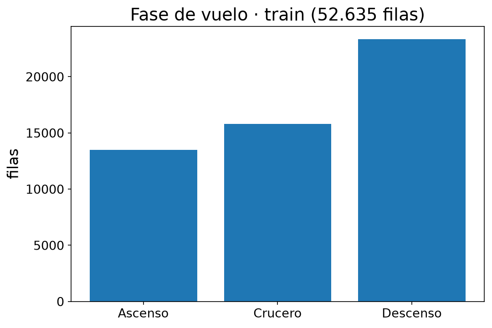
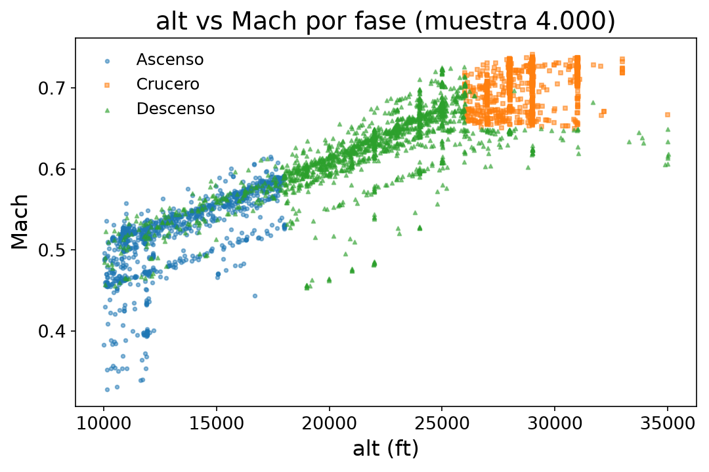
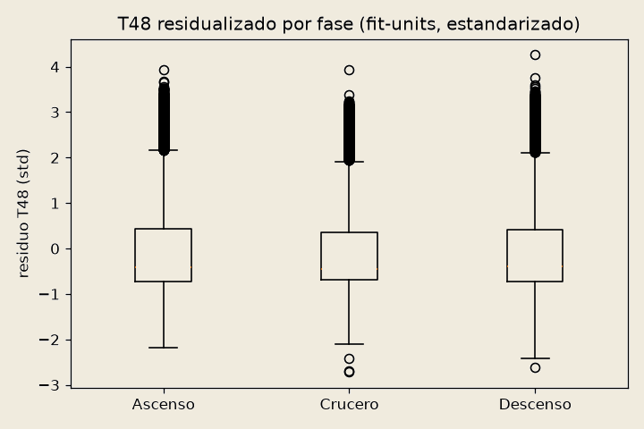
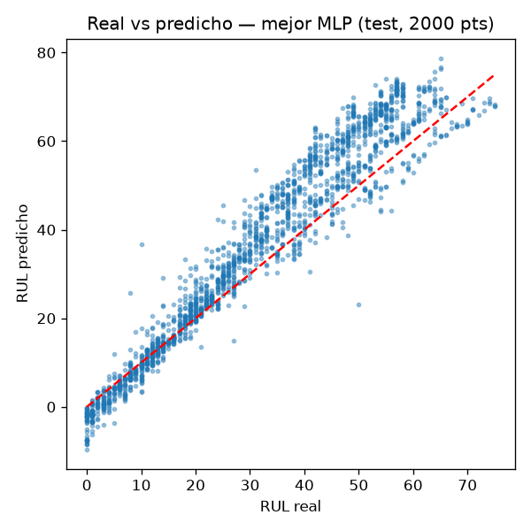

Ascenso / Crucero / Descenso desde alt y Mach. Entra como one-hot.
Canal 19 del BiLSTM. Su utilidad se mide en la ablación.
Los tres primeros justifican el reparto; los dos últimos, la residualización y el reloj.
Cinco lecturas, una decisión: que el modelo mire desgaste, no pilotaje.
Un motor se calienta porque se rompe o porque el avión sube a tope. Si no se separan las dos cosas, el modelo aprende pilotaje en vez de desgaste.
Un Ridge por sensor —14— sobre un polinomio de grado 2 en alt · Mach · TRA · T2. El régimen tiene R² = 0,997; en T50, R² = 0,977.
Solo con los motores 2·5·10·18·20. El árbol cuelga de esta recta; los modelos de fila no: etiquetan la fase con one-hot.
El árbol: 93 features (84 residualizadas + 8 de régimen + cyc_norm). La red: 19 canales (18 crudos + cyc_norm), sin Ridge. Catorce ajustes sobre 44.982 filas: segundos.

Si el residuo todavía separara fases, el árbol aprendería a volar, no a envejecer. La red tiene la secuencia para desenredarlo.
Una fila = una lectura. El modelo ve el régimen, no la historia.
Una lectura no ve degradación: la degradación es una secuencia.
Se mide con RMSE porque penaliza la cola, la que provoca el AOG. MAPE explota cuando la RUL tiende a cero.
Una ventana = la secuencia que hace visible el desgaste.
Los granos no se mezclan: 11,034 de fila y 4,338 de ventana no miden lo mismo.


En el secuencial las cuatro variantes caen en 5,878–5,974: el reloj no cambia el resultado. En LGBM cuesta +0,77.
Decisión: cyc_norm vive en las dos ramas base —canal 19 de la red y feature 1 de 93 del árbol— y se retira del meta, donde se llevaba ~100 % del peso. La ablación puntúa el LGBM solo: ahí cuesta 0,77 y el híbrido sin reloj no se ha re-medido.

Probamos algo que no dimos en clase y lo medimos. El reloj no compra precisión: se queda donde el contrato lo exige y sale del meta.
U14 pesa el 12 % de las ventanas y aporta el 47,9 % del error: RUL 76 > 63 del soporte del meta, y 20,6 lecturas por ciclo frente a 112 en U11. Global 4,338 vs macro 5,015: por eso se publican los dos.

El global pondera por ventanas; el macro da el mismo peso a cada motor. Publicar los dos evita que U14 desaparezca en la media.
Las dos ramas miran lo mismo: el reloj y la temperatura de salida. El meta solo las concilia.
SHAP describe el modelo, no el motor: asociaciones, no causas. La EMA queda fuera de la atribución.


NASA no es un RMSE: es una suma de exponenciales asimétricas —exp(−d/13)−1 si te quedas corto, exp(d/10)−1 si te pasas—. Por ser suma crece con las ventanas: solo se compara sobre las mismas filas.
EMA5 es una media móvil causal por motor, span 5: suaviza la predicción sin mirar el futuro. La firma el manifiesto, no este deck.